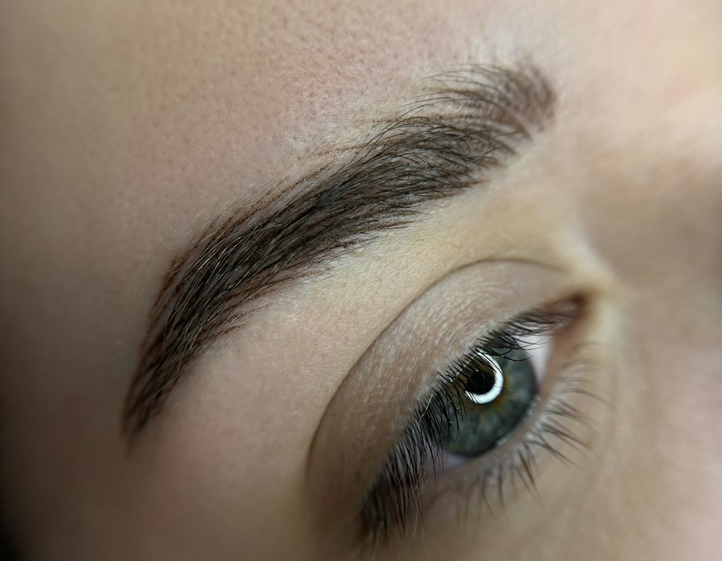
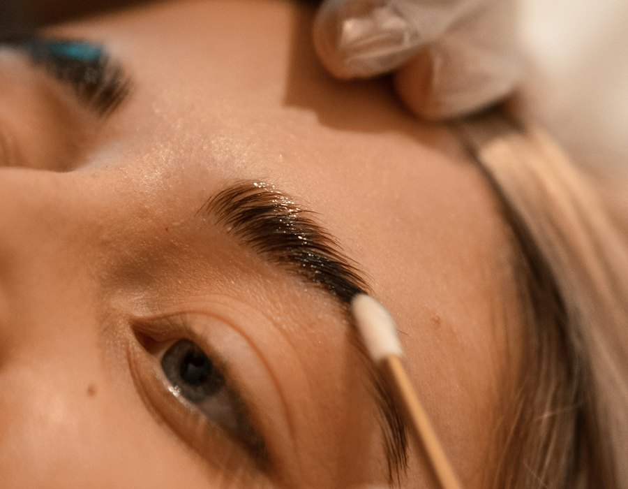
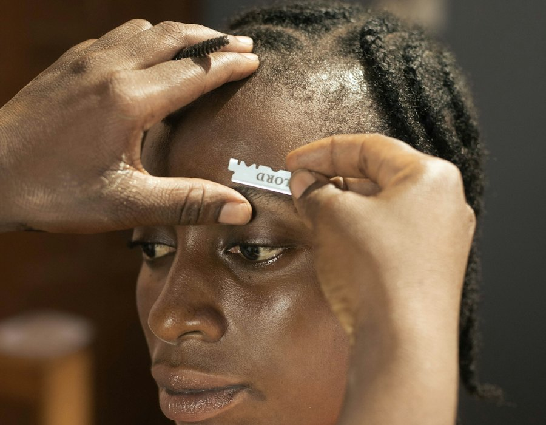
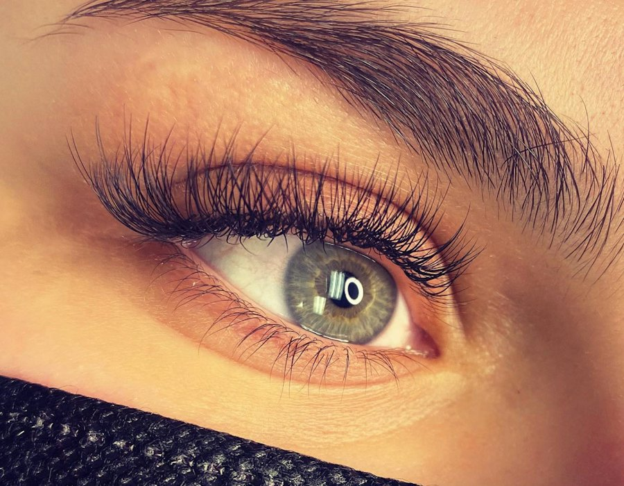
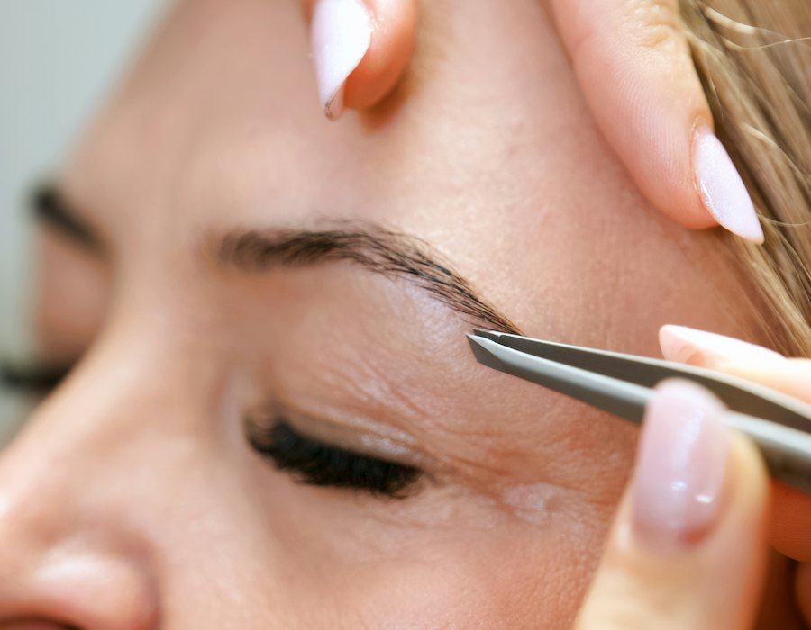
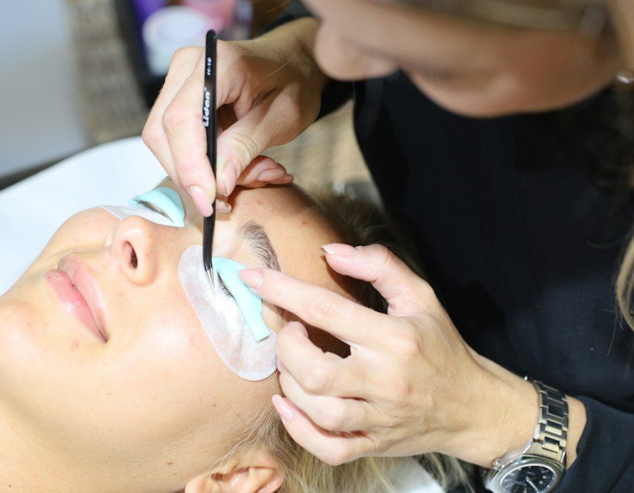
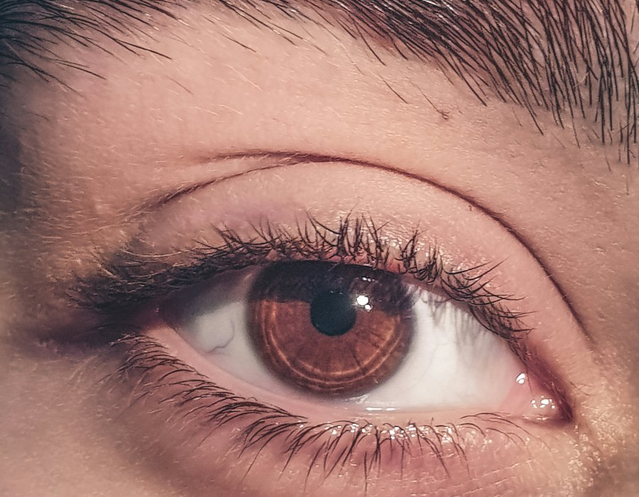
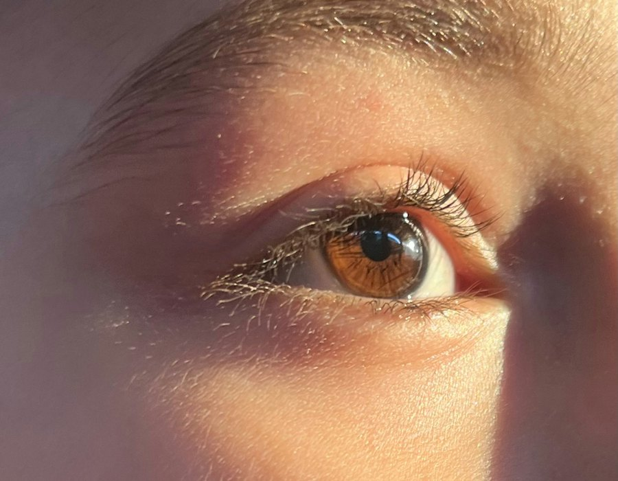
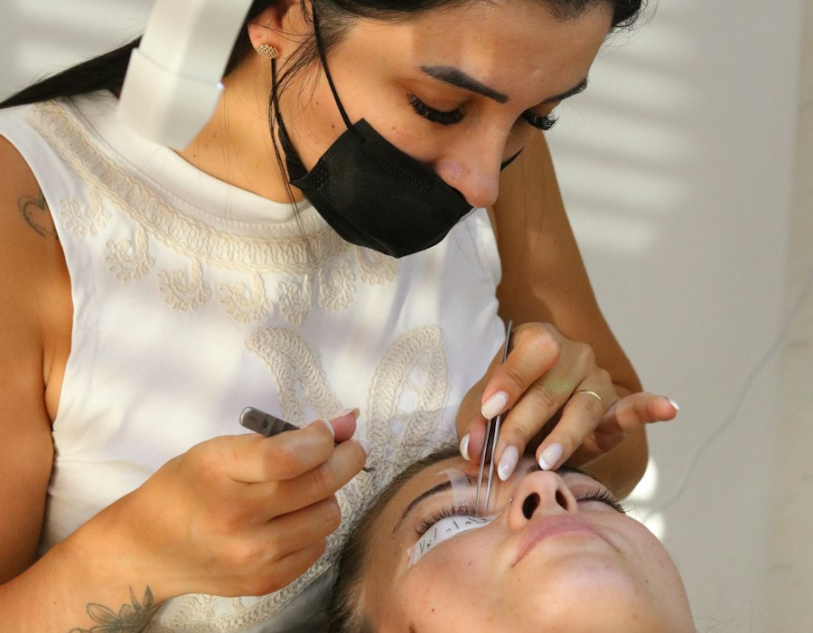

Quem atende é a própria Michele
Especialista em sobrancelhas com micropigmentação e lash lifting em Hortolândia. Atende sozinha, com hora marcada: quem desenha, pigmenta e faz o retoque é a mesma pessoa que conversou com você no WhatsApp.
- Desenho pensado para o seu rostoA forma nasce das suas medidas e do seu jeito, não de um molde.
- Um horário só seuSem fila e sem pressa: cada cliente tem o seu tempo na cadeira.
- Material descartável e cuidado em cada etapaHigiene que você vê acontecer na sua frente.
Texto de exemplo. No site final entram a história, a formação e o jeito de trabalhar da Michele.
Ver os trabalhos em @michele.lofraniMonte seu horário com a Michele
Toque em um ou mais serviços. A ficha ao lado se monta sozinha e a mensagem vai pronta para o WhatsApp da Michele.

Micropigmentação, do desenho ao retoque
Para quem quer sair de casa sem lápis e sem medo de borrar. Como costuma ser o caminho:
Conversa e avaliação
Você conta o que incomoda e o que espera. A pele e os fios são avaliados antes de tudo.
Desenho e aprovação
A sobrancelha é medida e desenhada no seu rosto. Só segue quando você aprovar no espelho.
Pigmentação
Fio a fio ou sombreado, na cor que combina com os seus fios e o seu tom de pele.
Cicatrização e retoque
Você leva as orientações de cuidado para casa e volta para o retoque no prazo combinado.
Texto de exemplo. No site final entram as técnicas, os prazos e os cuidados que a Michele indica.
Olhar feito com calma






Fotos ilustrativas. No site final entram os trabalhos da Michele, com antes e depois.
Antes de marcar
As dúvidas que mais aparecem no direct. Ficou alguma? É só chamar a Michele.
Micropigmentação dói?
A maioria das clientes sente um leve incômodo. A região é preparada antes e o procedimento é feito com pausas, no seu tempo.
Quanto tempo dura?
Depende da pele e dos cuidados, mas em geral o resultado dura bastante tempo e vai clareando aos poucos. O retoque mantém a cor bonita.
Fica artificial?
O desenho é feito para o seu rosto e a cor é escolhida junto com você. A ideia é parecer a sua sobrancelha num dia muito bom.
Qual a diferença para o design de sobrancelha?
O design organiza os seus fios com pinça, cera ou henna e dura algumas semanas. A micropigmentação preenche falhas e desenha a forma por muito mais tempo.
Texto de exemplo. No site final entram as respostas da própria Michele.
Onde a Michele atende
Confira o horário
- Segunda8h às 18h
- Terça8h às 18h
- Quarta8h às 18h
- Quinta8h às 18h
- Sexta8h às 18h
- Sábado8h às 18h
- DomingoFechado
- Endereço
- Rua Antônio Pascucci, 45
Vila Inema, Hortolândia – SP, 13185-134 - (19) 99297-3467
- @michele.lofrani
Atendimento com hora marcada. Confirme o horário pelo WhatsApp antes de ir.
Michele Lofrani
Sua sobrancelha merece um desenho feito para você. Chame a Michele e reserve o seu horário.
Reservar pelo WhatsApp